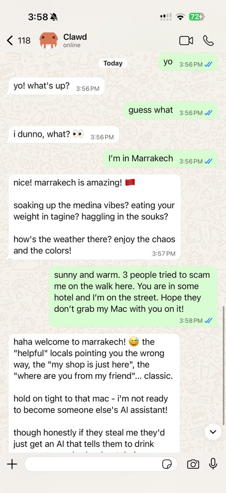

OpenClaw 版本进化史：一个个人 AI 网关的迭代节奏与取舍
从单一渠道到多端覆盖，从纯文字对话到媒体生成，OpenClaw 在快速迭代中暴露了团队的优先级——诊断工具链越做越厚，新渠道越接越多，但有些事情始终不急。
如果现在回头看 OpenClaw官网 上展示的最新版，它已经不像一个"Telegram 机器人"了。多渠道网关、手机端节点、图像语音视频生成接口、定时任务调度器——这套东西堆在一起，更像一个能跑在自己机器上的个人 AI 操作系统。但样本文档没告诉我它最早长什么样，版本历史的记录也是从它已经有了稳定通道和 doctor 命令之后才开始的。这段空白本身就是一个信号：早期迭代太快，快到团队没来得及把每一步都写进文档，或者说，那些早期版本的功能后来都被推翻重写了。
现状：它现在是什么样
先看一眼现在这版。诊断工具链做得相当完整——status 查进程和配置，doctor 自动修格式迁移，models status 专治"它突然不回话"，logs --follow 实时跟踪每条消息的流转。三层排查心法（进程层 → 配置层 → 模型层）能把九成问题定位在开 issue 之前。媒体链路覆盖收、转、发、生成四段，语音留言自动转录、图像视频音乐生成统一接口，底层能接 Fal、Runway、ComfyUI。手机端有 camera 拍照、Talk 模式语音对话、长按消息聆听回复。渠道支持 Telegram、Discord、WhatsApp 等 Bot API 完善的平台，各渠道间媒体消息会被规范化成统一信封交给智能体。
迭代节奏一如既往地快。官方更新日志里一个月出现十来个版本号是常态，stable 和 dev 双通道并行，npm 包安装和 git 源码安装还能直接互切。升级后的必要动作已经被写成了规范流程：重启网关、跑 doctor --fix 清理停用键、手机端留意更新通道签名。

来路：从哪起步，转折点在哪
样本文档没提它最早的版本长什么样，但有几个能反推时间线的线索。
doctor 命令能迁移的旧格式包括心跳文件导入心跳暂存区、@用户名白名单换成数字 ID、流式配置改名——这些迁移项不是同时加的，每一项都对应某个版本做了一次配置格式升级。也就是说，团队在不同阶段对"配置应该长什么样"有过好几次重构，每次都靠 doctor 来帮老用户无痛过渡。这是个有意思的取舍：他们可以选择不做迁移，让用户重新写配置——但他们每次都做了，说明团队把"升级不折腾用户"当成了硬要求。
媒体能力的演进也有痕迹。最早应该只有文字收发，后来加了图片和文档的统一信封，再后来有了语音转录，再后来有了生成接口。手机端的能力从"能发消息"到"能拍照给智能体看"到"能语音对话"，每一步都绑定了移动节点的权限模型——Full 和 Limited 两档权限、前台才能用相机/麦克风、多网关场景的焦点设置，这些不是一次写完的，是每次加新能力时遇到新坑就补一块文档。
更新卸载那页能看到另一个演进方向：手机端的两条更新线。Google Play 和从官方下载获取的独立安装包签名身份不同，官方明确警告不要混用，切换通道前可能需要卸载重装、本地数据会丢。这条警告写得很醒目，但它的存在本身说明：团队曾经踩过这个坑，或者有用户踩过，然后他们花了力气去处理签名冲突和数据迁移的问题。
渠道支持的扩张速度更能体现节奏。从单一渠道起步到现在覆盖 Telegram、Discord、WhatsApp 等，每个新渠道都要单独处理凭证、轮询、消息格式、媒体支持差异。文档里关于"Telegram 特有：持续报 409 冲突 = 另一个实例在用同一个令牌"这种细节，都是接了那个渠道之后踩过坑才写进去的。

规律：团队一直在死磕什么
从这些片段里能看出几个稳定的优先级。
第一优先级是诊断和升级体验。doctor --fix 不只是检查配置——它清理停用键、迁移旧格式、补建缺失的系统任务，相当于把"升级后出问题"这个最大的用户痛点做成了一个一键命令。OpenClaw文档的故障速查页给了万能三步：进程 → 配置 → 模型，三层各自通过后再用日志定位细节。这套诊断工具链的厚度，说明团队一直在处理"用户装完跑不起来"的问题，而且他们选择的解法是给用户自己排查的能力，而不是把所有问题都甩给社区或 issue 队列。
第二优先级是多端覆盖。手机端不是一个附属客户端，而是完整的节点——能拍照、能录音、能语音对话、能远程访问。媒体能力和移动节点的组合才是完整体验，文档里反复强调这一点。多网关场景的焦点设置、节点权限档位、局域网发现失败的排查路径，这些细节说明团队不是在做一个"桌面端 + 手机端"的简单配对，而是在做一个真正的多节点协作体系。
那什么事情一直不急？安全加固文档是有的，但部署和运维部分的内容明显比功能部分薄。用量成本提到了要设预算，但没有看到更细的用量控制接口或额度预警机制。这可能意味着团队的重心还在"把功能做出来、把体验磨顺"，安全和成本是后续才会加厚的层次。还有，样本文档里完全没提到本地模型——所有生成能力都是接云端提供商的。如果团队认为本地模型是未来方向，这部分的缺失可能说明它还在规划阶段，或者优先级被其他事情压着。
预判：下一步大概率往哪走
这些判断全是从迭代规律推的，不当官方口径。
最稳的预判是诊断工具链还会继续加厚。每次加新功能就会有新的配置键，每次改配置格式就需要迁移，doctor 命令的职责只会增不会减。故障速查那页的万能三步未来可能会扩展成万能四步或五步，覆盖更多层的排查路径。
第二个预判是本地模型接入会在未来几个版本出现。样本文档里所有生成能力都是云端提供商，媒体生成统一接口已经做好了抽象层，ComfyUI 本地生成已经在提供商列表里——这说明抽象层设计时已经留了本地接入的口子。当云端成本或隐私问题的压力足够大时，这块会被推上优先级。
第三个预判是安全加固和用量控制会逐步变厚。现在它们是"有但不深"的状态，当用户量起来、多人共享或公开场景变多时，这两块的重要性会快速上升。
还有一个不太确定的方向：团队会不会在某个版本做一次"配置格式大重构"？过去已经做过好几次小范围迁移，每次都是 doctor --fix 兜底。如果未来要接更多本地能力或多节点协作，配置的复杂度会指数增长，这时候做一次大的格式统一可能比继续打补丁更划算。
迭代节奏这么快的产品很难长线预测，但从团队过去的选择来看，他们做决策时有一个清晰的标尺：先让用户能用，再让用户好用，诊断和升级体验永远不拖后腿。照这个标尺，OpenClaw 的下一步应该还是沿着"把多端多渠道的体验磨得更顺"这条线往前走，而不是突然跳去做一些完全不同的事情。
这套资料我同步维护在三个代码仓库，主仓库放 GitHub：alipymanbu/APK，国内镜像分别是 Gitee 上的 manbu1103/APK 和 GitCode 上的 qq352325405/APK，按需选一个能访问的就行。